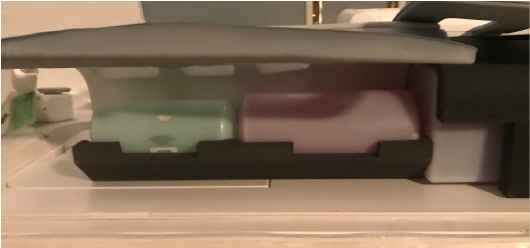
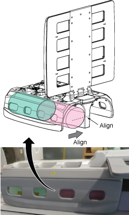
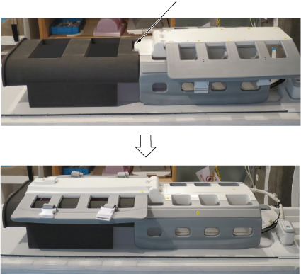
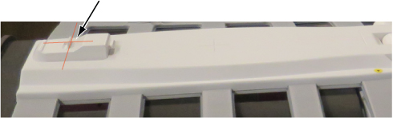
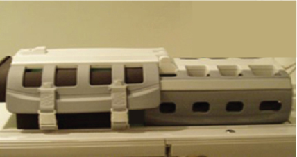
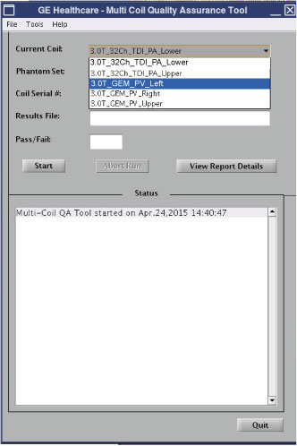

Setting up 3.0T GEM Peripheral Vascular Array (PVA) - left
Set up the left GEM Peripheral Vascular Array (PVA) for the Multi-Coil Quality Assurance (MCQA) check.
Procedure
Put the flat filler panel on the table.
Figure 1. Flat filler panel
Place the phantom positioner on the table.
Place the PV coil on the cradle and connect the coil connector to port P2.
Place the large and small unified cylindrical phantoms under the left side of the PV coil.
Note Make sure the phantoms are aligned so that the phantom will be in the image field of vision.
Cylindrical phantoms are aligned to touch the center of assembly.
Pink cylindrical phantom face is aligned to the end of assembly.
Figure 2. Phantom positioner

Figure 3. Placement of large and small cylindrical phantoms into positioner

Place the PA phantom positioner on top of the TL unified phantoms, fitting the alignment block on the PV coil into the alignment notch on the PA phantom positioner.
Flip the PV upper unit onto the PA phantom positioner.
Figure 4. Placement of PA phantom positioner

Move the cradle and adjust the PV coil position so that the alignment light shines in the middle of the latch of the PV coil.
Note Make sure the whole coil is left/right centered to the cradle.
Figure 5. Alignment

Fasten with Velcro straps of PV upper unit.
Figure 6. Fasten with Velcro straps

Press Landmark and then press Advance to Scan.
Run the MCQA check.
Note
Select 3.0T_GEM_PV_Left in the Current Coil field.
Figure 7. MCQA tool menu

Note When viewing the images in the MCQA image viewer for GEM PVA - left, the phantom appears next to R for right side because the scan uses head first instead of feet first.